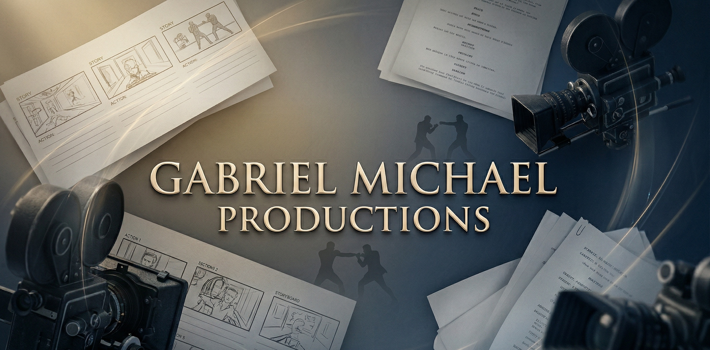

I provide strategic oversight for independent films, documentaries, impact media, and branded content. I specialize in identifying narrative gaps, streamlining workflows, and providing the guidance necessary to ensure diverse media properties are efficient, safe, and creatively strong.
P.A., Strategic Oversight, Safety, Athletics and Stunt Coordination
Working alongside producers, writers, and crews on television, sitcoms, and independent productions—both in creative offices and on studio sets—has given me a comprehensive view of how projects operate at scale.
With a background in martial arts, athletics, and technical set operations, I bring a hands-on, strategic perspective to film and unscripted media. I focus on elevating execution through logistical roadmaps and story development, ensuring projects are efficient, safe, and narratively compelling.